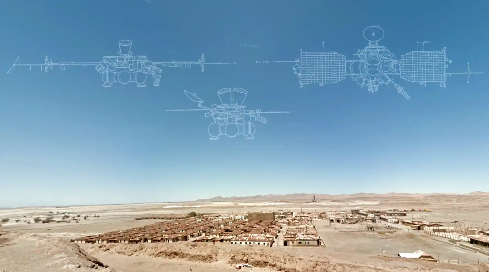
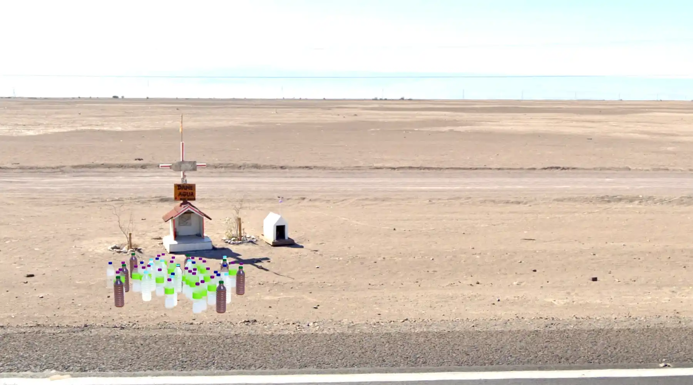

Dead on the Roadside

Somewhere in northern Chile, a two-lane asphalt road rolls over a dry, yellowish plain of gravel and dust. Where you and I are standing, the road's shoulder is narrow, leaving us little space. Fortunately, there is barely any traffic here. The lanes are drawn in fading white, and so are the sparse posts on either side of the carriageway. There isn't a tree or plant in sight – the sky turns yellow towards the horizon, almost seamlessly blending with the ground. One might think we found ourselves in a liminal space; the 3D artists ran out of time, there were no more assets to place in this area of our simulation. Yet something has caught our attention, we just had to stop and look.
For the 2nd issue of Hurry Up! We're Dreaming, an online publication on technology and spirituality, I wrote a multisensory text on the Chilean animitas, road-side shrines forming the backbone of folk spirituality in the Atacama Desert and beyond. The text is combined with soundscapes designed for my game Finding Gustavo.
